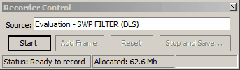

Record Animation
Record Animation
OptiLayer offers the capability to save sequences of window images
as frames in animated GIF files. This feature enables users to
create visual representations of their designs that can be
utilized in presentations, reports, emails, and other mediums.
Users can accomplish this task by utilizing the “Record Animation”
option, which brings up the Recorder Control dialog.
In the Recorder Control dialog, users will find a list of windows
that can be stored in animated GIF format. They have the
flexibility to record the states of selected windows on a
frame-by-frame basis, or initiate the recording of a long
computational procedure automatically. The window currently being
recorded will be highlighted with a special  blinking
icon in the top left corner, providing a visual indicator of the
recording process. This functionality allows users to capture and
save dynamic visual representations of their OptiLayer designs.
blinking
icon in the top left corner, providing a visual indicator of the
recording process. This functionality allows users to capture and
save dynamic visual representations of their OptiLayer designs.

The Record Animation option is managed through the dialog as described below:
The Source combo box lists all windows that are available for recording using this feature.
The Start button initiates the recording process.
The Add Frame button allows users to add a new frame with the currently displayed image in the source window.
The Reset button terminates the current recording process and discards all previously recorded information.
The Stop and Save… button enables users to save all recorded frames to disk as an animated GIF file.
It is important to note that recording is a memory-intensive task, and it is not recommended to record movies longer than 100-200 frames unless you have a fast computer with more than 1GB of RAM. If you start a computational procedure such as Gradual Evolution, Needle Optimization AUTO, etc., the recording will be carried out automatically. You only need to initiate recording before running computations. During the recording process, the window that is currently being recorded cannot be resized or modified. This ensures the consistency of the recorded frames in the animated GIF file.